The metric, and what to answer when you cannot tell
Sixty percent of the grade is one number: the normalized minimum detection cost on the sponsor's test set. Under it, calling a real recording synthetic costs about nine times as much as letting a fake through, and only the order of our scores matters. Those two facts explain most of what this system does, including where it puts the files it cannot judge.
The cost function we are judged on
minDCF = 9.33 × PFA + 1 × Pmiss
One real file called synthetic costs as much as 9.33 missed fakes. That single ratio shaped every decision in this system.
- PFA
- false-alarm rate: the share of real files scored above the threshold
- Pmiss
- miss rate: the share of synthetic files scored below it
- min
- the best threshold is chosen by the scorer, so only the ranking of scores matters
Built from the sponsor's weights CFA = 4, Cmiss = 1 and a prior of 0.3 synthetic (about 0.7 of files are real): cost = 4 · PFA · 0.7 + 1 · Pmiss · 0.3 = 2.8 · PFA + 0.3 · Pmiss, divided by the best constant decision, 0.3, so that 1.0 means "no better than always saying real" and 0.0 is perfect. source: src/hearsay/metrics.py lines 29-31 (GitHub; assumes main is public)
Try it
Move the two rates and watch the cost. The arithmetic is exactly the site's formula: (4*pfa*(1-0.3) + 1*pmiss*0.3) / 0.3 with pfa and pmiss as fractions.
Normalized cost: (1.0 would be the constant "always real" answer)
Where the weights come from
The sponsor's instructions set the analyst's scenario: a false alarmA real recording that the system calls synthetic. P_FA is the share of real files scored above the threshold. This is the expensive mistake under the sponsor's cost. (a real recording flagged as synthetic) costs 4×source: CLAUDE.md, section conventions a missA synthetic recording that the system calls real. P_miss is the share of synthetic files scored below the threshold. The cheap mistake, relatively speaking., and about 70%source: CLAUDE.md, section conventions of the test files are real. Our metric module encodes exactly that: C_FA = 4, C_miss = 1, π_synth = 0.3, and the normalized cost is 9.33·P_FA + P_miss. The scorer sweeps every threshold and keeps the smallest cost, so the number is the best the ranking could do with a perfect threshold.



Mermaid source
%% The two ways to be wrong, and what each one costs under the normalized cost.
%% cites: CLAUDE.md#conventions, README.md#results-at-a-glance
flowchart LR
R["a real file"] --> RA["scored above<br/>the threshold"] --> FA["false alarm<br/>counts 9.33"]
S["a synthetic file"] --> SB["scored below<br/>the threshold"] --> MI["miss<br/>counts 1"]
FA --> C["minDCF = 9.33 · P_FA + P_miss<br/>the scorer picks the threshold that minimizes it,<br/>so only the ranking of scores matters"]
MI --> C
classDef real fill:#e9eff6,stroke:#005493,color:#101a2b
classDef fake fill:#00254b,stroke:#00254b,color:#ffffff
classDef bad fill:#fff3d1,stroke:#c37530,color:#101a2b
classDef plain fill:#ffffff,stroke:#d6deea,color:#101a2b
class R real
class S fake
class FA,MI bad
class RA,SB plain
Why only ranking matters
Because the scorer chooses the threshold, any monotone rescaling of our scores changes nothing: a Platt mapA one-dimensional logistic fit that turns a raw decision value into a probability. It is monotone, so it changes the numbers a reader sees without changing the ranking the metric scores., a z-score, or the cut at 0.5source: README.md, section validation all leave minDCFMinimum detection cost function. The scorer sweeps every possible threshold over our scores and reports the lowest cost it finds, with a false alarm weighted far more than a miss and the whole thing scaled so that 1.0 equals the best constant answer and 0.0 is perfect. Because the threshold is chosen by the scorer, only the order of our scores matters. exactly where it was. That is why fusion works in ranks, why the test shareThe fraction of the test files scored above 0.5, watched against the roughly 30% synthetic the brief states. A smoke alarm for a broken model, never a selection signal, because any monotone rescaling changes it without changing minDCF. above 0.5source: README.md, section validation is a smoke alarm and never a selection signal, and why every rule was chosen on minDCF with EEREqual error rate: the point on the threshold sweep where the false-alarm rate equals the miss rate. Reported alongside minDCF, never selected on. only reported. Source: the README's validation section.
Why the operating threshold sits far above the midpoint
With a false alarm that expensive, calling a file synthetic only pays when the evidence is strong. On a calibrated probability scale the Bayes thresholdThe score at which calling a file synthetic starts to pay under the cost weights and the prior. With a false alarm this expensive it sits far above 0.5 on the probability scale, which is why "above 0.5" is not the decision rule. sits near 0.903source: docs/consults/2026-09-26_fusion-strategy_RESPONSE.md, section what-to-ignore-and-why under the brief's cost, not at 0.5source: docs/consults/2026-09-26_fusion-strategy_RESPONSE.md, section what-to-ignore-and-why (that is the cut on a prior-neutral likelihood ratio read as a probability); the probability the TSV carries already includes the prior shift, so our metric module moves each log-likelihood ratio such that a fixed 50%source: src/hearsay/metrics.py line 69 (GitHub; assumes main is public) cut on it corresponds to a posterior above 0.8source: src/hearsay/metrics.py line 69 (GitHub; assumes main is public) at the four-to-one cost. Every intuition anchored on "above 0.5source: docs/consults/2026-09-26_fusion-strategy_RESPONSE.md, section what-to-ignore-and-why means fake" is off by an order of magnitude in likelihood ratio. This is also why the share of test files above 0.5source: README.md, section validation sitting near the stated prior is reassuring but not a score.
Two readings of the same score
The instructions say 1.0source: README.md, section the-fusion-rule = synthetic. The sponsor's shipped scoring code (ASVspoof5's) treats a higher score as bona fide, the opposite. We follow the instructions and never flip; every model logs its cost under the sponsor's code both ways, and a pre-flipped twin of the draft TSV exists in case NSA's feedback shows they grade inverted. Source: "Score direction" in the README. The second reading also moves the heavy weight: the sponsor code's cost is P_FA + 4·P_miss at π 0.5, with the 4× on a missed fake. So every readout on this site names its cost: the brief's, or the sponsor code's.
| Shipped rule | In-the-Wild, brief cost (9.33·P_FA + P_miss) | In-the-Wild, sponsor-code cost (P_FA + 4·P_miss) |
|---|---|---|
| A3 w 0.2 + E | 0.228source: README.md, section numbers | 0.239source: README.md, section numbers |
The default answer: the pinned block
The brief warns that real clips may be perturbed, that fakes are laundered, and that a naive detector will be fooled. It leaves one question to the team: what do you answer when you cannot tell? Silence, music, static, a file that fails to decode. Our first deep probe scored pure silence at 0.99source: README.md, section orchestration-what-routing-changes synthetic, which under this cost would be the most expensive possible mistake if the file were real.
The answer is placement, not a value. Every file we could judge gets a score in [0.001source: README.md, section orchestration-what-routing-changes, 1]. Undecidable files get scores in [0, 0.001source: README.md, section orchestration-what-routing-changes): strictly below all of them, at the real end, ordered inside the block by the weak M1b signal plus a hash of the filename so no two share a value, with decode failures at the very bottom. Source: "The abstention path".



Mermaid source
%% The score line, synthetic at the top, with the pinned block at the bottom.
%% cites: README.md#orchestration-what-routing-changes, README.md#how-it-decides
flowchart TB
T["1.0 · synthetic"]
T --> D["every file we could judge<br/>scores in [0.001, 1]<br/>ranked by the fused probability"]
D --> E["0.001 · the floor of every judged file"]
E --> B["the pinned block · [0, 0.001)<br/>no speech to judge, or the decode failed<br/>ordered by the weak M1b signal + a filename hash"]
B --> Z["0.0 · real · decode failures at the very bottom"]
classDef top fill:#00254b,stroke:#00254b,color:#ffffff
classDef mid fill:#e9eff6,stroke:#005493,color:#101a2b
classDef block fill:#fff3d1,stroke:#c37530,color:#101a2b
class T top
class D,E mid
class B,Z block
Right under both readings of the score
The block is the one hedge that does not depend on which way NSA's code reads our scores. Let q be the fraction of truly synthetic files inside the block. Placing the block at the bottom is optimal under the brief's cost when q is below 80%source: README.md, section orchestration-what-routing-changes, and under the scoring code's inverted cost when q is above 9.7%source: README.md, section orchestration-what-routing-changes. Undecidable files should sit near the 30%source: README.md, section orchestration-what-routing-changes base rate, which leaves roughly a 3× margin on each side. Source: consult item 5.
| Reading of the score | Where the expensive error sits | Bottom placement is optimal when | Expected q for undecidable files |
|---|---|---|---|
| The brief (1.0source: README.md, section the-fusion-rule = synthetic, false alarm ×4) | a real file ranked high | q < 80%source: README.md, section orchestration-what-routing-changes | near the 30%source: README.md, section orchestration-what-routing-changes prior |
| The sponsor's code (higher = bona fide, missed fake ×4) | a fake file ranked high | q > 9.7%source: README.md, section orchestration-what-routing-changes |
No test file is gated today, so the block costs nothing on the current ranking. It only protects against a silent or musical file being scored as synthetic, which our deep models do on their own.
Reading the draft review
NSA scores one early submission per team and returns minDCF only. We sent the exact artifact we ship and decided in advance what each returned number means. Source: the README's decoding table.
| Returned minDCF | What it means | What we do |
|---|---|---|
| 0.00source: README.md, section validation–0.20source: README.md, section validation | our direction; the test set behaves like our holdout | ship unchanged |
| 0.20source: README.md, section validation–0.45source: README.md, section validation | our direction; the test set is more like In-the-Wild | switch to the most false-alarm-robust candidate |
| 0.45source: README.md, section validation–0.90source: README.md, section validation | ambiguous | don't flip; fall back to M1b alone |
| 0.95source: README.md, section validation–1.00source: README.md, section validation | NSA's code reads our scores inverted | ship the pre-flipped twin |
The returned number is pending. When it arrives it goes on the home page beside the holdout and In-the-Wild figures.